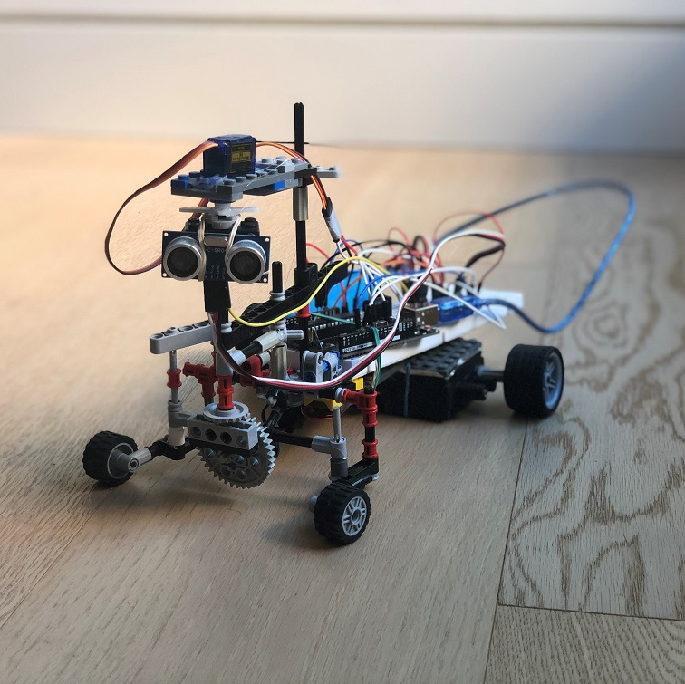
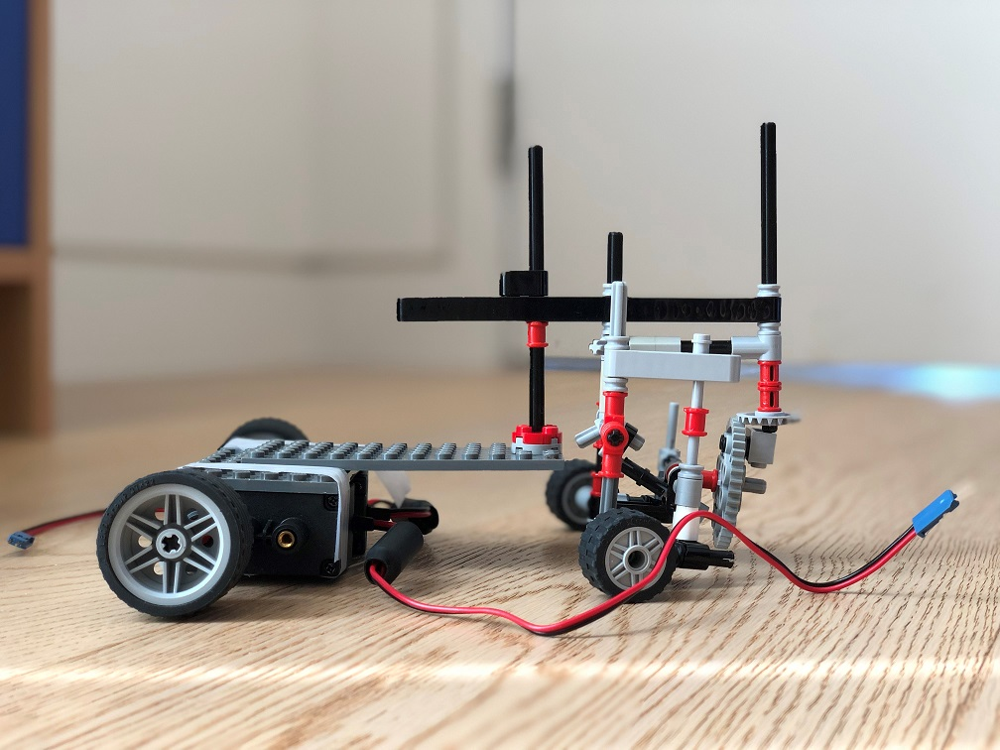
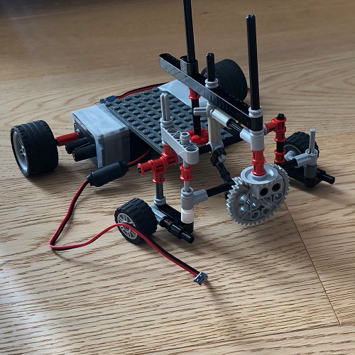
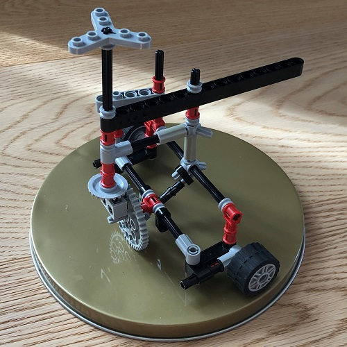

Autonomous vehicle built for my grade 12 capstone project.
This project consisted of using an Elegoo microcontroller + starter-kit and old toy parts + lego. It was my first time using a microcontroller to create a moving device. Everything was self-taught, self-built; and it was the project that helped me make my decision to go into engineering.

In december 2020, I was introduced to a thing called an Arduino by Mark Rober - a popular youtuber - who was advertising a class he was teaching built around teaching people how to build cool devices using arduino and raspberry pi. It was a $500 course which I obviously wasn't willing to spend because I thought to myself that, "I could learn this all by myself." And so, I decided to do my own research on what an Arduino is and to make Arduino controlled thing myself.
Instead of buying an Arduino Starter-Kit, I bought an amazon alternative Elegoo Starter-Kit - which was basically the same thing, but cheaper.
I incoporated this as my capstone project for highschool; and from there on, I decided to make a self-driving car - a car that avoids walls.

At the time, I knew the Java programming language; and luckily, that was enough to get me started in teaching myself C which is used in programming an Arduino.
I followed many YouTube tutorials on how breadboards and IO devices work. And my school's robotics team was generous enough to provide me with their recycling bin which consisted of old electronic VEX motors, which I figured how to make combatible with my microcontroller.
However, the greatest challenge came when building the chassis. Specifically, finding parts. I scoured my old toys and legos to find parts that could help me build a working car axle. This was the greatest challenge as I didn't have enough of the same parts and had to find alterntive ways of doing things. But I personally think it's the coolest part of the car; and the part I'm most proud of besides the final product.


The vehicle is suppose to detect whether it is going to hit a wall or not, determine whether there is more space on the left or right, and to do a two-point turn to the side determined.
The video on the right is the first successful run of the car working as designed.